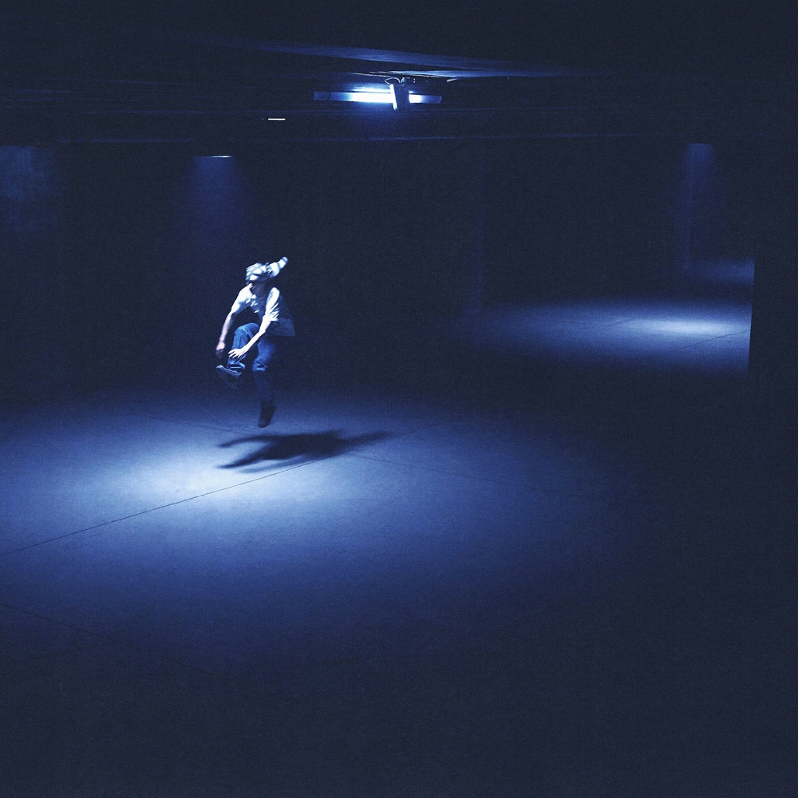
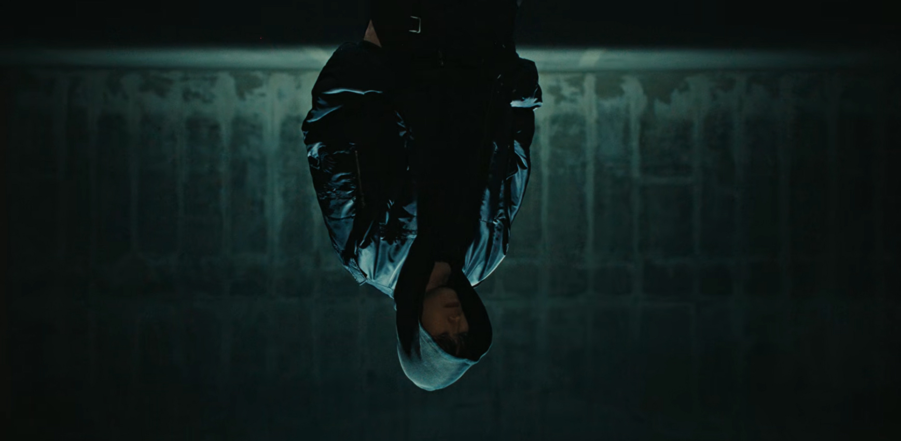
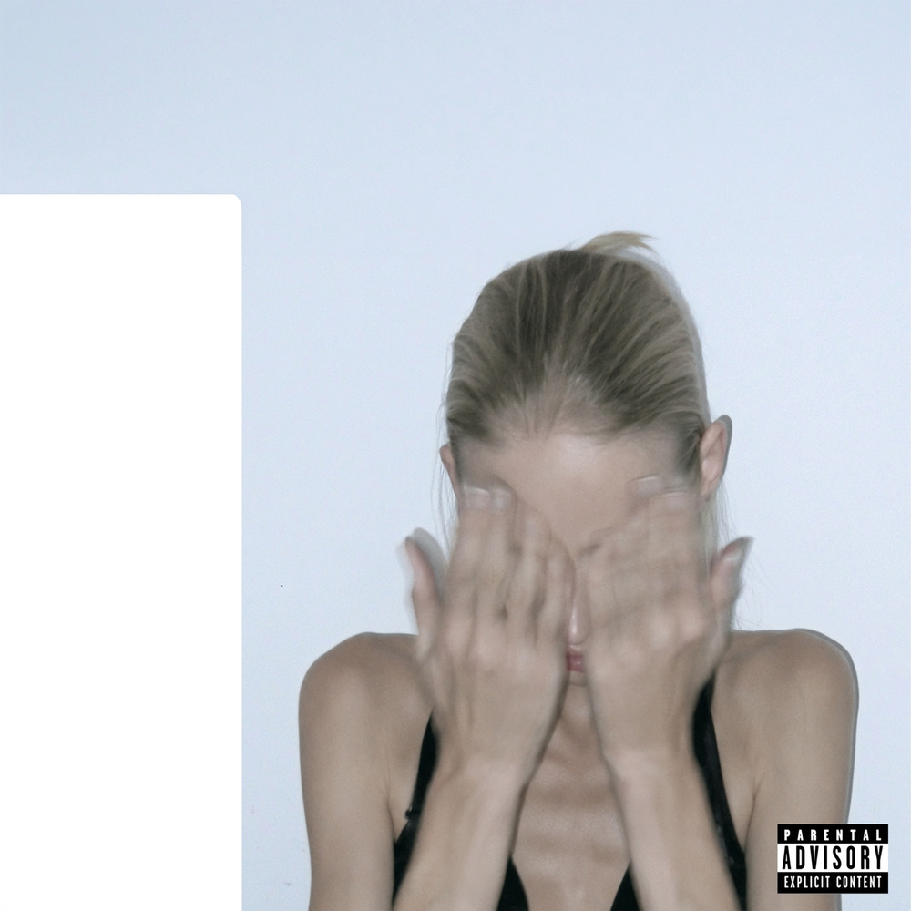
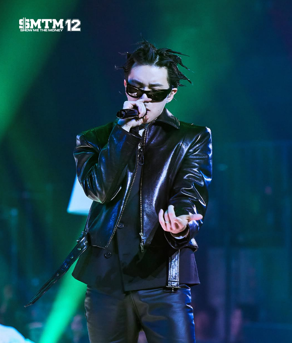
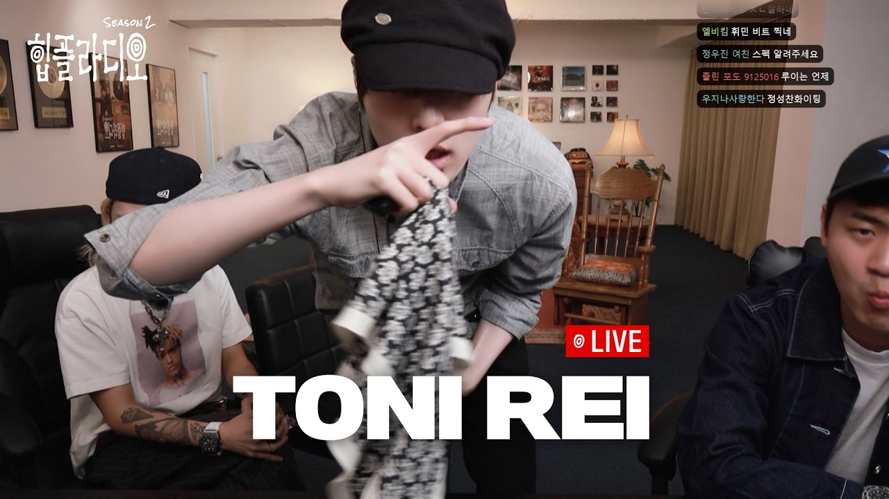
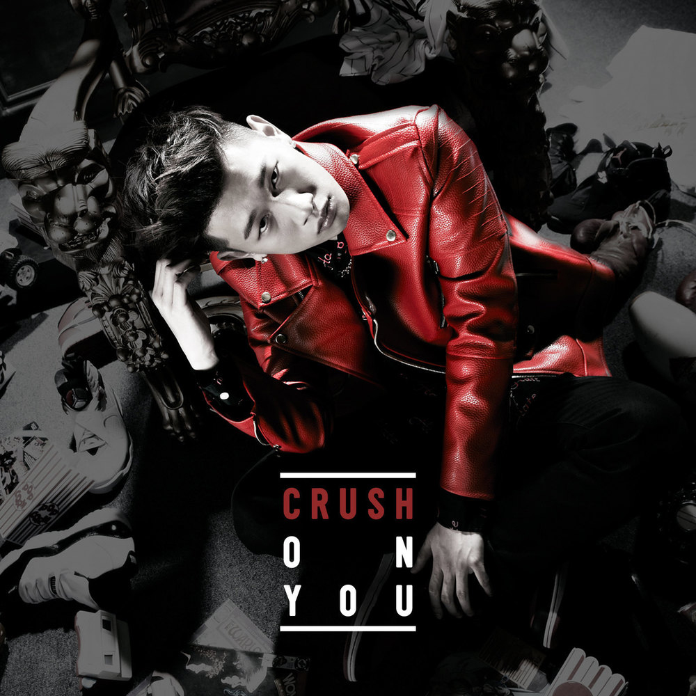
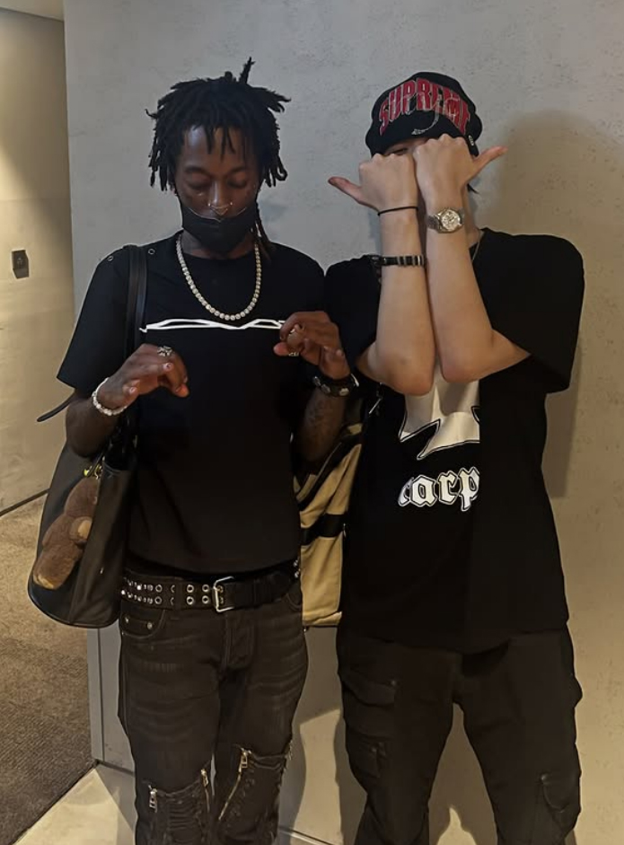

라프 산두 님 안녕하세요! 인터뷰에 참여해 주셔서 감사합니다. 먼저 간단한 자기소개 부탁드리겠습니다.
안녕하십니까. POV와 오카시에서 활동하고 있는 라프 산두입니다.
요즘 오카시 활동을 비롯해 굉장히 바쁜 나날을 보내고 계신데요. 최근에는 어떻게 지내고 계신가요?
최근에 앨범 작업이 끝나고 조금 쉬고 있었습니다. 고등학교 친구들이랑 술도 마시고, 축구도 하고, 롤도 하면서 고등학생 같은 굉장히 건전한 취미들로 스트레스를 풀고 있네요(웃음).
그러고 보니 주변 분들 이야기를 들어보니까 축구를 굉장히 잘하신다고 하더라고요.
그 정도는 아니고요. 그냥 좋아합니다(웃음).

겸손하시네요(웃음). 오늘 인터뷰는 라프 산두 님의 첫 솔로 앨범 [SOUL BABY]를 중심으로 진행하려고 합니다. 본격적인 이야기에 앞서, 먼저 [MOHO]에 대해 이야기해 보고 싶어요. 프로듀서 드레스 님과 함께 작업한 앨범이었죠. 라프 산두 님의 시점에서 [MOHO]는 어떤 작품이었다고 생각하시나요?
[MOHO]는 드레스 형이랑 함께 작업한 앨범이었기 때문에, 평소 제 음악에서는 보여줄 수 없었던 사운드나 모습을 보여주는 데 더 집중했던 것 같아요. 대중분들이 조금 더 소비하기 쉬운 음악에 도전해 보자는 생각이었습니다. 지금까지는 마이너한 음악이나 되게 코어한 장르를 해왔다고 생각했거든요. 그런 점 자체가 [MOHO]에서는 하나의 도전이었던 것 같아요. 한 번도 해보지 않은 경험을 해보는 앨범?
타이틀은 [MOHO]였지만, 말씀해주신 것처럼 앨범의 방향성이나 작업 과정은 어느 정도 틀이 잡혀 있었네요. 그렇다면 어떤 부분이 ‘모호’했을까요?
드레스 형 같은 경우는 케이팝 작곡도 많이 하지만, 아티스트 프로듀서로서 하고 싶은 음악도 있잖아요. 저 또한 방송이 끝난 뒤 제가 하고 싶은 음악, 그리고 비춰지고 싶은 모습이 굉장히 다양했죠. 그런 복합적인 면모들이 하나로 뭉쳐지니 '모호'라는 단어 하나로 통합됐던 것 같아요.
어떻게 보면 지금까지 한 단어로 정의되지 않았던 뮤지션으로서의 다양한 면모를 하나로 정의하려다 보니 역으로 ‘모호’라는 단어로 귀결된 것 같아요. 오카시가 원래는 힙합을 기반으로 한 팀이고, [MOHO]는 R&B와 팝을 중심으로 한 작품이었잖아요. 평소에도 이런 다양한 장르의 사운드나 음악을 해보고 싶으셨나요?
사실 저는 평소 음악을 들을 때 힙합을 엄청 많이 듣는 편은 아니에요. R&B나 Soul을 중심으로 많이 듣는 편이거든요. 그러다 보니 자연스럽게 이런 음악을 해보고 싶은 욕구가 생겼어요. 다만 제가 갑자기 이런 음악을 하고 싶다고 해서 낸다 해도 대중에게는 설득력이 없을 수 있으니까, 실행에 옮기지는 못하고 항상 버킷리스트처럼 마음속에 갖고 있었어요. 언젠가 이런 앨범을 꼭 내보고 싶다는 욕구가 늘 있었습니다.

[MOHO]가 발매된 지도 어느 정도 시간이 지났고 많은 분들이 앨범을 들어보셨는데, 라프 산두 님 입장에서는 [MOHO]가 성공적인 도전이었다고 생각하시나요?
수치적인 부분으로 봤을 때는 성공적이었다고 생각해요. 애초에 목표와 방향성이 굉장히 명확했던 앨범이었잖아요. 노리고자 했던 포인트나 방향성이 뚜렷했고, 이후 프로모션이나 마케팅적인 부분도 저와 드레스 형이 어느 정도 생각했던 대로 풀렸거든요. 저희가 의도한 방향대로 흘러간 부분이 있었기 때문에, 그런 의미에서는 성공적인 도전이었다고 생각합니다.
쇼츠 챌린지 같은 콘텐츠도 많이 퍼지면서 좋은 반응을 얻었죠(웃음). 어떻게 보면 지금의 오카시나 라프 산두 님의 행보에서는 쉽게 시도하기 어려웠던 결과물이 아니었나 싶습니다. [MOHO] 작업이 [SOUL BABY]나 현재 작업 중인 음악, 혹은 앞으로의 작업에도 어느 정도 영향을 끼칠까요?
어쨌든 아티스트라는 존재도 소비가 되는 거잖아요. 하나의 작품이 끝나면 그 작품을 통해 라프 산두라는 아티스트의 이미지가 만들어지는데, [MOHO] 이후에 형성된 제 이미지를 바탕으로 그 다음 행보를 어떻게 가져가야 할지에 대해 많은 고민을 했어요. 그런 부분에서는 분명 영향이 있었던 것 같습니다.

[MOHO]가 나오고 곧바로 라프 산두 님의 첫 솔로 정규 앨범 [SOUL BABY]가 공개됐습니다. 어떤 앨범인지 간단하게 소개 부탁드릴게요.
뒤에서 조금 더 자세하게 설명드릴 것 같긴 한데요. 제가 여태까지 음악을 하면서 좋아했던, 그리고 하고 싶었던 사운드를 최대한 담으려고 했습니다. 사운드적으로도 굉장히 다양한 색깔이 들어 있는 앨범인 것 같아요.
저희가 알기로는 이번 앨범이 나오기까지 정말 많은 솔로 앨범을 준비했다가 엎고, 다시 만들고, 또 엎는 과정을 반복하셨다고 들었거든요.
엎어진 곡들도 정말 다양했어요. 굉장히 딥한 음악도 있었고, 메세지적으로도 깊은 이야기를 담은 곡들도 있었고요. 반대로 가볍게 소비하기 좋은 음악도 있었거든요. 그런데 그런 곡들을 내지 않았던 이유는 퀄리티 때문이라기보다 제 멘탈적인 부분이 더 컸던 것 같아요.
원래 저는 되게 내성적이고 저 자신을 드러내는 걸 싫어하는 성격이었는데, <쇼미더머니>에 출연하고, [MOHO]라는 앨범도 내면서 계속 노출이 되다 보니까 그런 방어기제가 조금씩 깨지면서 드디어 앨범을 낼 수 있게 된 것 같아요. 그전에는 조금이라도 마음에 안 들면 계속 엎고, 또 엎고 그랬거든요.
부담이 있었던 거네요. 라프 산두라는 이름으로는 대중 앞에 제대로 모습을 보여준 적이 없었으니까
그런 셈이죠(웃음).

'이게 내 첫 장면이다'라는 생각이 강했을 것 같아요. 사람들은 이 작품으로 라프 산두를 판단하게 될 테니까 '완벽해야 한다'는 부담이 있었고요. 그런데 이제는 쇼미더머니도 출연하고 여러 활동을 하면서 자연스럽게 많이 노출이 됐잖아요.
맞아요. 여러 활동을 하면서 '이젠 멈출 수 없다'는 생각이 들었어요. 더 이상 그런 부담을 가질 수도 없는 상황이었고. 그냥 뭐라도 해봐야겠다는 마음이었습니다. 그래서 생각을 비우고 해보자는 마음으로 작업했어요.
지금까지 공개되지 않은 곡들은 추후에 부틀렉이나 싱글 같은 형태로 공개하실 계획도 있으신가요?
계속 아카이빙처럼 쌓아두고 있어요. 요즘 타이밍이 제일 중요하다고 생각하거든요. 사람들은 같은 음악을 듣더라도 그 아티스트의 행보나 여러 외적인 요소들을 함께 소비한다고 생각해요. 그래서 그런 타이밍에 맞춰 적절하게 내는 것도 중요하다고 생각해서, 나중에 적절한 시점이 오면 그때 활용하려고 합니다.
말씀하신 것처럼 그때그때 적절한 곡을 발표하려면 결국 그만큼의 라이브러리가 쌓여 있어야 하겠네요. 그런 의미에서 지금까지 작업해 오신 곡들이 앞으로도 많이 공개될 수 있겠다는 기대가 됩니다. 원래 이번 앨범이 처음에는 [SPA]라는 이름으로 준비됐다고 들었는데요.
[SPA]라는 앨범은 얼터너티브한 요소가 많았고, 사이키델릭 록 기반의 요소도 조금 들어간 작품이었어요. 그런데 그걸 지금 시점에서 냈을 때는 대중분들께 설득력이 없을 것 같더라고요. 그래서 [SPA]는 나중에 내야겠다고 생각하게 됐습니다.
Lil Yachty에게도 영감을 많이 받은 작품이기도 해요. 음악이 똑같다는 건 아니고, 행보 자체가 그랬습니다. 원래는 트래퍼로 소비되던 이미지가 있었는데, 그런 앨범을 냈을 때 저는 되게 재밌고 멋있다고 느꼈거든요. 그런데 그런 반전, 새로운 모습을 보여주려면 일단 라프 산두라는 아티스트가 어떤 음악을 하는 사람인지부터 대중에게 알려져 있어야 한다고 생각했어요. 그래야 나중에 [SPA]라는 앨범도 더 빛을 발할 수 있을 것 같아서요.
그렇다면 완전히 엎어진 작품은 아니네요. 추후에 다른 형태로라도 다시 발표할 의향이 있으신 거군요. [SOUL BABY]라는 제목은 어떻게 정하게 되셨나요?
이 타이틀에는 두 가지 의미가 담겨 있습니다. 이 이야기는 이번 인터뷰에서 처음 이야기하는 거네요(웃음).
첫 번째는 말 그대로 'Soul을 듣고 자란 아이(Soul Baby)'라는 뜻입니다. 저를 이야기하는 거예요. 어렸을 때 아버지와 차를 타고 어디를 갈 때면 항상 Soul 음악을 틀어주셨거든요. 제가 99년생인데 아마 90년대생 분들도 비슷할 거라고 생각해요. 하지만 제가 지금 하고 있는 음악은 Rage나 Trap 같은 힙합 장르잖아요. 그래서 Soul을 듣고 자란 아이였던 제 모습과 지금 제가 하는 음악이 하나로 융화되는 모습을 담아보고 싶었어요.
두 번째는 말 그대로 사람의 '영혼(Soul)'이라는 의미입니다. 2번 트랙 “Do not Hide your Soul”에서 윤다혜 님이 함께해 주셨는데, '너의 영혼을 숨기지 말라'는 메시지를 담고 있잖아요. 'Baby'는 연인에게 부르는 호칭이기도 하고요. 이런 의미들을 중의적으로 담아 [SOUL BABY]라는 제목을 짓게 됐습니다.
아버지께서도 음악을 굉장히 좋아하셨다고 하셨는데요. 그때 들었던 음악 중에 지금도 기억에 남는 곡이나 아티스트가 있으신가요?
옛날엔 스트리밍 시대가 아니었으니까 카세트나 CD, MP3 같은 것들로 음악을 많이 들었잖아요. 그래서 맨날 듣던 것만 들었는데, 아버지가 주로 틀어주셨던 게 Michael Jackson, Stevie Wonder, The Beatles 같은 음악이었어요. 아버지가 골프를 좋아하셔서 제가 초등학교 때 주말마다 골프를 치러 같이 갔는데 이동 시간만 최소 2시간 정도였거든요. 약간 반강제로라도 그 음악들을 계속 들을 수밖에 없었어요. 그래서 자연스럽게 그런 음악을 많이 접했던 것 같습니다.
완전 Soul 음악들은 또 아니었네요(웃음).
그렇죠(웃음). 제가 가장 기억하는 대표적인 아티스트가 Stevie Wonder 같은 분들이고, 들었던 음악 중에는 당시 이름을 잘 모르는 가수도 많았어요. 이름이 기억나지 않지만 지금 들으면 바로 '아, 이 노래!' 하고 떠오르는 아티스트(웃음)?
커버 아트도 굉장히 인상적이었습니다.
이 앨범 자체가 R&B나 Soul 음악처럼 사랑에 대한 이야기를 많이 담고 있어요. 그런 의미에서 여성의 이미지를 사용했어요. 그렇다고 대놓고 울고 있거나 절규하는 모습은 아니고, 얼굴을 가린 채 어떤 생각에 잠겨 있는 듯한 이미지를 담고 싶었습니다. [Blonde]의 영향도 조금 받은 것 같아요. 어쨌든 인물 위주의 커버를 만들고 싶었고 원래는 제 사진을 찍을까도 했는데, 당시에는 제 비주얼이 마음에 안 들어서(웃음).
지금까지는 오카시라는 그룹 안에서 활동하시거나, 이전 작품인 [MOHO]도 드레스 님과의 협업으로 작업하셨잖아요. 이번에는 온전히 라프 산두라는 이름을 건 첫 솔로 앨범입니다. 작업하면서 이전과 가장 크게 달라졌다고 느낀 점은 무엇이었나요?
확실히 스트레스는 덜했지만(웃음), 작업 자체는 오카시나 다른 사람들과 함께할 때가 더 가벼운 마음으로 임할 수 있던 것 같아요. 함께하는 사람들이 있으니까요. 그런데 개인 작업은 모든 책임이 저한테 있다 보니 훨씬 부담도 크고, 만드는 과정 자체가 더 어려웠어요. 머릿속에는 '이런 걸 하고 싶다', '이런 사운드를 내고 싶다'는 생각이 있는데, 그걸 어떻게 구현해낼지가 가장 고민이었거든요. 처음으로 혼자 작업해 보니까 정말 쉽지 않았어요.
그래도 창작에 있어서 자율성은 훨씬 보장됐을 것 같은데요.
맞아요. 정말 하고 싶은 걸 마음껏 할 수 있었어요. 그런데 저는 혼자 생각에 빠지는 스타일이라 오히려 계속 고민하게 되더라고요. 그러다 보면 객관화가 잘 안 되기 시작하고.
그럴 때는 어떻게 해결하셨나요? 다른 멤버들이나 주변 동료들에게 피드백을 받으시는 편인가요, 아니면 혼자 계속 고민하시는 편인가요?
보통은 제가 친하게 지내는 친구들에게 들려줘요. 아크하입의 베니 게이트랑 고등학교 친구 한 명이 있는데 주로 그 두 명한테 먼저 들려줍니다. 고등학교 친구는 음악하는 친구는 아닌데 음악 듣는 걸 정말 좋아해요. 항상 좋은 음악도 많이 추천해 주고, 디깅도 엄청 많이 하는 친구예요. 사실 그 친구들이 어떤 말을 하든 저는 괜찮아요. '괜찮다'고 하면 자신감을 얻고 그대로 가는 거고, 아니라고 하면 또 그 의견을 받아들이는 편입니다.
의외인 게, 오카시라는 팀 안에서 활동하시다 보니 이런 앨범을 만들 때도 멤버들과 함께 이야기 나누면서 피드백을 주고받을 줄 알았거든요.
매튜랑은 계속 같이 작업했기 때문에 매튜와는 소통을 많이 했지만 딱히 조언을 구하거나 작업을 공유하는 편은 아니었어요. 각자 앨범 작업을 할 때는 그런 걸 많이 공유하지 않는 편이라 작업실을 같이 쓰니까 가끔 들리면 듣는 정도였지, 일부러 들려주지는 않았어요.
그러면 오카시 멤버들도 앨범이 발매되고 나서 처음 들은 셈이잖아요. 반응은 어땠나요?
사실 특별한 반응도 없었어요. 그냥 "축하해", "고생했다" 정도..?
생각보다 담백한 반응이었네요(웃음).
확실히 청춘 만화 같은 분위기는 아니었죠(웃음).
이제 본격적으로 앨범 이야기를 해보겠습니다. 첫 트랙 “Hello”는 모두에게 건네는 인사 같은 곡이잖아요. 글렌체크의 “Vivid”를 샘플링하셨네요.
어렸을 때 들었던 노래를 지금 다시 들으면 그때의 향이나 온도 같은 게 떠오르는, 그런 노스탤지어를 불러일으키는 곡들이 있잖아요. 저한테는 이게 그런 노래였거든요. 중학생 때 “Vivid”를 정말 많이 들었어요.
이번 앨범을 작업하면서 제가 지금까지 어떤 음악을 들으며 살아왔는지 돌아보는 시간을 가졌어요. '나는 어떤 음악을 좋아했지?', '어렸을 때는 뭘 들었지?' 하면서 다시 “Vivid”를 들어봤는데, 뭔가 확 올라오는 느낌이 있었어요. 중학생 때 기억도 떠오르고, 특히 그 신스 루프가 너무 마음에 들어서 이걸 첫 곡에 활용해 보고 싶다는 생각이 강하게 들었습니다. 그래서 바로 글렌체크 김준원 님께 연락드려 샘플링해도 되는지 여쭤봤고 데모도 보내드렸습니다.
정말 아무런 접점도 없었는데 그날 바로 답장을 주시고, 굉장히 열린 태도로 긍정적으로 허락해 주셨어요. 중학생 때 정말 즐겨 듣던 음악을, 제가 음악가로 활동하게 된 지금 제 첫 정규 앨범에서 샘플로 사용한다는 것 자체에 큰 의미를 두고 작업했습니다.
‘이 노래 샘플처럼 어릴 때 희미했던 것들이 이제 선명해져’라는 가사도 인상적이었죠.
고등학교 동창을 만나든, 부모님을 만나든, 친척을 만나든 "무슨 일 하냐?"는 질문 받잖아요. 사실 한 1~2년 전까지만 해도 음악을 한다고 말은 했지만, 크게 떳떳하지는 못했던 것 같아요. 그 원인이 인지도일 수도 있고, 음악 활동으로 인한 수입 때문일 수도 있고요. 그런데 이제는 제가 떳떳하게 음악을 한다고 말할 수 있게 됐다고 느껴요. 그런 의미에서 여태까지는 말하지 못했던 것들, 어렸을 때는 보이지 않던 것들이 점점 보이기 시작했고, 제가 계속 발전하고 있다는 걸 느꼈거든요.
일종의 정체성에 대한 이야기이기도 하네요. 예전에는 '나는 어떤 사람인가'에 대한 확신이 없었다면, 이제는 음악가로서의 정체성이 조금씩 자리 잡은 거고요.
예전에는 저 스스로도 제가 어떤 사람인지에 대한 답을 확실히 내리지 못했던 것 같아요. 하지만 이제는 제 자신한테 자신감을 불어넣어 주고 싶었던 것 같아요. 너 잘하고 있고, 여기까지도 잘해왔으니까 이제는 떳떳하게 음악한다고 말해도 된다. 그래서 제목도 그냥 “Hello”로 지었습니다. 첫 인사를 건네는 것처럼, 가장 단순하고 직관적인 메시지를 담고 싶었어요.
이번 앨범의 가장 큰 키워드 중 하나가 '변화'라고 느꼈습니다. 지금 말씀하신 것도 뮤지션으로서의 위치나, 이제는 스스로 이야기할 수 있게 된 것들에 대한 변화가 있었기 때문에 가능한 이야기였다고 생각하는데요. 다음 트랙인 "Do not Hide Your Soul"에서는 윤다혜 님이 피처링으로 참여하셨습니다. 앞서 [SOUL BABY]라는 타이틀의 의미도 설명해 주셨지만, 이 곡에서 말하는 'Soul Baby'는 누구를 지칭하는 걸까요?
soul과 baby 중간에 쉼표가 들어갔어요. ‘Don't hide your soul, baby’. "너의 영혼을 숨기지 마, 자기야."이런 정도로 생각해주시면 좋을 것 같아요.
그 대상이 연인일 수도 있고, 어머니일 수도 있고, 누군가가 몽환적인 분위기 속에서 저에게 "너의 영혼을 숨기지 말고 있는 그대로 살아가도 된다."라는 말을 계속 반복해서 들려주는, 그런 인트로 같은 형식의 곡을 만들고 싶었습니다. 이런 메세지에는 여성 보컬이 어울릴 것 같아서 윤다혜 님을 섭외한거죠.
잠깐 돌아가서 "Hello" 이야기를 해보면, 가사에 ‘I'll be there wherever you go’ 같은 표현이 있잖아요. 특정한 연인이나 누군가를 향한 사랑 이야기처럼 느껴지기도 했거든요.
그 해석도 맞아요. 아까도 말씀드렸듯이 R&B는 사랑에 관한 이야기를 많이 하는 장르잖아요. 저도 그 감성을 가져와 보고 싶었어요. 힙합 앨범에 가깝지만 대부분 사랑에 대한 이야기를 담고 있습니다.
그래서 바로 다음 트랙인 "Romance"로 이어지게 됩니다. "Do not Hide Your Soul"과 "Romance"는 사운드적으로도 굉장히 자연스럽게 트랜지션되잖아요. 이번 앨범을 만들면서 트랙 간의 사운드적인 유기성도 많이 신경 쓰셨나요?
제가 앨범에서 가장 보여주고 싶었던 것도 그 부분이었어요. 저는 Soul을 들으며 자랐지만 지금 제가 듣고 만들고 있는 음악은 Trap이나 Rage 같은 장르잖아요. 두 지점을 자연스럽게 연결하는 데 가장 신경을 썼던 것 같습니다.
어릴 때부터 들어온 음악과 지금 내가 하고 있는 음악, 그 정체성이 이어지는 과정 자체를 트랜지션으로 표현한 거네요. 앨범을 작업하면서 사운드와 서사 중 어느 쪽에 조금 더 무게를 두고 작업하셨나요?
저는 원래도 항상 사운드를 가장 중요하게 생각하는 편이에요. 사실 신스를 길게 이어주며 트랜지션을 주는 방식은 많이 쓰는 기법이잖아요. 같은 장르 안에서 넘어가는 건 흔한 시도라고 생각했어요. 그런데 저는 사람들이 예상하지 못할 만한 연결이 뭘까를 고민했습니다. 전혀 다른 사운드, 장르를 연결하는 시도를 해보고 싶었던 거죠.
"Romance"도 Makoto Matsushita의 "September Rain"을 샘플로 가져와서 피치를 올린 뒤 배속으로 만들어 깔아뒀어요. 사실 이렇게 이야기하지 않는 이상 아무도 모르죠(웃음). 저만 아는 디테일이긴 한데, 그런 부분까지 신경을 많이 썼습니다. 보통 이런 스타일의 곡은 베이스가 크게 나오고 전자음 루프를 많이 쓰잖아요. 그런데 저는 그런 전자음 대신 조금 더 색다른 방식으로 루프를 만들고 싶었어요. 아무도 눈치채지 못할 수 있는 사운드적인 디테일까지 신경을 많이 썼습니다.
누군가가 "혹시 이 부분 이렇게 작업하신 거 아닌가요?" 하고 알아봐 준다면 정말 기쁘실 것 같네요.
네. 그럼 정말 엄청 기쁠 것 같아요(웃음).
이런 방식으로 샘플을 활용한 트랙이 다른 곡에도 있나요?
"All Swag"도 마찬가지예요. Soul은 아니지만 R&B 기반의 샘플로 루프를 따서 만든 부분이 있고요. 마지막 트랙 "So Far So Gone"도 루프 자체는 R&B 샘플을 사용했고, 드럼을 조금 다르게 가져가는 식으로 여러 시도를 해봤습니다.
앨범 초반 세 트랙만 봐도 반전이 두 번이나 있는 것 같아요. "Do not Hide Your Soul"이후에 갑자기 "Romance"로 뒤집어지는 느낌?
원래는 "Do not Hide Your Soul"을 1번 트랙, 그러니까 인트로로 두려고 했어요. 그런데 최근에 Don Toliver 앨범도 그렇고 다른 아티스트들의 앨범을 들어보니까, 1번 트랙에 임팩트 있는 곡을 하나 배치하는 경우가 많더라고요. 그래서 "Hello"라는 제목 그대로 먼저 인사를 건네고, 그다음 인트로 같은 역할의 "Do not Hide Your Soul"로 넘어가는 구성을 택해본거죠.
특히 "Romance"는 베이스가 정말 강렬하잖아요. 사실 그런 장르에서는 보통 플렉스하거나 자기 과시를 하는 경우가 많은데, 저는 R&B와 Soul이 가진 사랑이라는 테마를 유지하고 싶었어요. 처음 누군가를 보고 첫눈에 반했을 때의 감정 있잖아요. '와, 정말 예쁘다' 하고 강하게 꽂히는 그 순간을 묵직한 베이스로 표현해보고 싶었습니다.
첫눈에 반했을 때의 충격을 베이스로 표현한 거군요.
맞아요(웃음).
그렇게 이어지는 다음 트랙이 "All Swag"입니다. 여기서는 달라진 라프 산두 님의 모습을 이야기하고 있는데요. 어떻게 보면 변화의 기점이 <쇼미더머니>였다고도 볼 수 있을 것 같아요. 프로그램 전후로 오카시라는 팀 안에서나, 또 라프 산두 개인으로서나 뮤지션으로서의 마인드셋, 환경이 달라진 부분이 있었나요?
사실 환경 자체는 크게 달라진 게 없어요. 생활도 예전과 똑같고요. 그런데 마인드셋은 정말 많이 바뀌었습니다.
돈을 번다는 게 어떤 분야든 정말 쉬운 일이 아니라는 걸 요즘 더 많이 느끼고 있고, 그만큼 누군가가 제 음악을 소비해주기 때문에 지금의 일이 굴러가는 거잖아요. 그래서 더 프로페셔널하게 임해야겠다는 생각을 많이 하게 된 것 같습니다.
다르게 이야기하면 이전까지는 약간 아마추어리즘에 입각한 마인드였다고도 볼 수 있을 텐데요. 라프 산두 님이 생각하시는 프로와 아마추어를 가르는 가장 결정적인 차이는 무엇이라고 생각하시나요? '이게 갖춰지면 프로다'라고 생각하는 기준.
진짜 어려운 질문인 것 같은데요(웃음). 책임감인 것 같아요. 저는 지금 회사에도 소속되어 있고, 오카시라는 팀에도 소속되어 있잖아요. 제가 실수를 하거나 제 역할을 제대로 하지 못하면 누군가는 피해를 받게 된다는 게 가장 큰 차이인 것 같습니다. 예전에는 그냥 제가 실수하고 잘못하면 저만 손해를 보면 됐어요. 그런데 지금은 제가 실수하면 다른 사람도 피해를 볼 수 있고, 같이 일하기로 한 사람들에게도 피해를 줄 수 있잖아요. 그렇게 '잃을 것이 생겼다'는 점이 가장 큰 차이인 것 같습니다.
특히 같은 말을 하더라도 예전과 지금, 돌아오는 피드백이 달라지잖아요. 그런 부분도 많이 느끼셨을 것 같습니다. 아까 보도자료에서도 '99년생인 자신은 항상 문화적으로 과도기에 있었다'고 말씀해 주셨는데요. 이번 앨범의 중요한 키워드이기도 합니다. 이 이야기를 조금 더 자세히 들려주실 수 있을까요?
제가 요즘 어린 친구들이나 사촌동생들을 보면서 많이 느끼는 게 있어요. 저는 스마트폰이라는 기기가 중학교 1학년쯤 처음 나왔던 세대거든요. 그전까지는 놀이터에서 뛰어놀고 술래잡기를 하면서 놀았는데, 요즘 친구들은 그런 문화가 거의 없잖아요. 그렇게 성장하면서 온라인 세상이 본격적으로 열리고, 나아가 코로나도 겪으면서 저는 아날로그 시대와 지금의 온라인 시대 사이의 과도기를 살아온 세대라고 생각해요. 그리고 그 경험이 음악적으로도 굉장히 큰 영향을 줬다고 생각하고요.
저는 일본에서 어린 시절을 보냈지만, 그때 듣고 자란 음악과 지금 어린 친구들이 듣는 음악은 너무 달랐어요. 그런데 또 성인이 된 지금은 이 친구들에게도 소비될 수 있는 음악을 해야 하나 하는 고민도 있었고요. 요즘 미국 언더그라운드 씬을 봐도 굉장히 강렬한 음악을 하는 친구들이 많잖아요. 그런데 제가 첫 정규 앨범을 만들면서 '나는 어떤 음악을 해야 하지?', '내 정체성은 뭘까?'를 계속 고민했어요.
그 간극 속에서 제 나름대로 내린 답은 ‘둘을 한번 섞어보자’는 것이었습니다. 장르를 아예 새로 만들겠다는 건 아니지만, 새로운 사운드를 한번 제시해 보면 좋지 않을까 생각했어요. 요즘 친구들이 하는 음악을 따라가는 것도 물론 멋있지만, 예전에 듣고 자란 음악과 지금의 음악을 잘 섞어서 제가 느끼는 복잡한 감정들을 사운드로 풀어내면 좋겠다는 생각을 했습니다.
음악적으로 쌓아온 경험을 바탕으로 시대의 간극을 풀어낸 이야기라고 볼 수 있겠네요.** **어렸을 때와 지금 어른이 된 자신을 비교했을 때, 가장 큰 변화의 기점이 무엇이었다고 생각하시나요?
어떤 하나의 사건이나 이벤트가 있었다기보다는 살아오면서 자연스럽게 변했던 것 같아요. 사회도 변하고, 세상도 계속 변하고, 음악도 이제는 숏폼으로 소비되는 시대가 됐잖아요. 그런 시대의 흐름에 영향을 받으면서 저도 자연스럽게 변화해 온 것 같습니다. 딱 하나의 사건이 모든 걸 바꿨다기보다는 그런 과정이었던 것 같아요.
그 변화에 대한 거부감은 없으셨나요? 지금은 30초짜리 숏폼에 맞춰야 하고, 그 30초마저 첫 5초 안에 사람을 붙잡지 못하면 그냥 넘겨버리잖아요. 그런 변화가 답답하면서도, 또 아티스트라면 외면할 수도 없는 현실이기도 하고.
너무 있죠. 사실 저는 딱 그 사이에 있는 사람인 것 같아요. 약간 꼰대와 요즘 MZ 세대의 중간쯤에 있는 느낌이랄까요. 양쪽 감각이 저한테 묘하게 섞여 있는 것 같아요. 그런데 결국 그런 변화에 맞춰 새로운 시도를 계속해 나가는 게 음악하는 사람들의 숙명인 것 같기도 해요. 물론 '이거 진짜 너무한데?' 싶은 생각도 들지만, 그렇다고 거기서 멈출 수는 없잖아요. 그러면 이걸 어떻게 받아들이고, 저는 이걸 어떤 방식으로 표현해서 사람들에게 어필할 수 있을지를 계속 고민하게 되는 것 같습니다.
근데 또 그게 낀 세대의 장점이라고 생각해요. 흑과 백 사이에 있는 회색처럼, 앞세대와 뒷세대를 모두 경험한 세대잖아요. 두 시대의 맥락을 모두 이해할 수 있기 때문에, 그 둘을 자연스럽게 융화시키는 것도 가능한 것 같습니다. 그럼 다음 질문으로 넘어가 보겠습니다. "All Swag"을 비롯해 이어지는 구간에서는 토니 레이 님과 나우아임영 님이 피처링으로 참여하셨습니다.
우선 [SOUL BABY]는 흐름상 전반부에는 젊음과 패기로부터 발산하는 에너지를 담고 싶었어요. 반대로 후반부로 갈수록 가지고 있던 것들을 하나씩 잃어가는 흐름을 만들고 싶었고요. 그렇게 생각했을 때 제가 느끼기에 정말 젊은 에너지를 가진 친구들이 누구일까를 고민했어요. 여기서 젊다는 건 나이가 아니라 음악적으로 굉장히 프레시한 친구들이라는 의미인데, 그런 의미에서 토니 레이와 나우아임영이 함께하면 지금의 젊음을 가장 잘 표현할 수 있겠다는 생각이 들어서 함께하게 됐습니다.

나우아임영 님은 이미 씬에서 굉장히 많은 주목을 받고 있는 뮤지션이잖아요. 반면 토니 레이 님은 아직 씬에서 크게 알려진 단계는 아니지만 꾸준히 존재감을 보여주고 있고요. 라프 산두 님이 생각하시는 토니 레이 만의 가장 큰 매력은 무엇인가요?
제가 생각하는 첫 번째 매력은 아직 노출이 많지 않다는 점이에요. 나아가 제 시선으로는 제가 추구하는 음악 방향이나 멋있다고 생각하는 감성과 결이 정말 잘 맞는 친구라고 느꼈어요.
예전에 힙플라디오에서 토니 레이가 라이브하는 걸 봤는데, 정말 잘한다고 느꼈어요. 그 무대를 보고 '아, 얘랑은 꼭 한 번 작업해보고 싶다'는 생각이 들었습니다. 사실 그전 싱글들을 들으면서도 이미 잘한다고 생각했는데, 그 라이브를 보고 확신이 생겼어요. 그리고 목소리도 굉장히 다양하게 사용할 수 있고, 사운드적으로도 여러 가지를 소화할 수 있는 친구라는 점이 큰 매력인 것 같습니다.
토니 레이 님은 앞으로 1년 안에 훨씬 더 큰 주목을 받을 것 같다는 생각이 들어요.
저도 그렇게 생각합니다. 정말 잘하는 친구니까요.
이번 앨범을 들어보면 "Turn the Music Up"부터 이어지는 중반부는 파티에서 벌어지는 일들과 사랑의 감정들이 펼쳐지는 구간처럼 느껴집니다. 반대로 초반부와 후반부는 또 분위기가 확연히 다르고요. 말씀해 주신 것처럼 앨범이 크게 세 구간으로 나뉘는 느낌인데, 이런 구성도 처음부터 구상하고 작업에 들어가신 건가요?
사실 큰 흐름은 어느 정도 미리 짜두고 있었어요. 그런데 솔직히 말씀드리면 정말 시간이 타이트했습니다.
물론 그전부터 여러 아이디어와 피스들은 계속 만들어 놓고 있었지만 발매일이 확정된 뒤부터 본격적으로 작업을 시작했거든요. 키드밀리 형이 계속 "언제 낼 거냐" 물어보고 7월 31일로 발매일도 확정되었는데, 다른 일정들까지 병행하다 보니까 어느새 발매일까지 한달 밖에 안 남았더라고요. 정말 촉박했어요. 이미 구상해 둔 조각들은 있었지만 그걸 어떻게 연결할지가 중요했던 거죠.
앨범이 공개된 뒤 주변 분들의 후기나 소개를 보면 '3년이 걸린 앨범'이라는 표현이 많이 나오잖아요. 그렇다면 그 3년에는 앨범을 구상했던 시간도 포함된 걸 텐데, 실제 [SOUL BABY]를 작업한 기간은 어느 정도였나요?
정말 실질적인 작업 기간은 2~3주 정도였던 것 같아요. '3년'이라는 표현도 맞는 말이긴 한데, 제가 3년 전에 처음 매튜를 만났거든요. 그때 개인 앨범을 준비하려고 했고, 그 과정에서 [SPA]도 있었고, 결국 엎어진 곡들도 있었죠. 계속 작업하고 엎고, 다시 만들었던 시간이 3년이었던 거예요.
'앨범을 만들어야겠다'고 마음먹은 순간부터 지금까지가 3년이었던 셈이네요.
모든 아티스트는 사실 늘 앨범을 만들고 있잖아요. 계속 곡을 쓰고, 구상도 하고요. 저도 계속 그런 작업을 해왔고, 그 과정 속에 [SOUL BABY]가 있었던 거죠. 다만 이 앨범 자체만 놓고 보면 정말 2~3주 정도 작업했던 것 같아요.
전에 아크하입의 웬즈데이님이 매튜님과 [Purity] 관련 이야기를 들었던 적이 있어요. 뭔가 매튜 님과 작업하게 되면 항상 짧고 굵게 작업이 마무리되는 느낌인데(웃음).
제가 P라서 마감이 다가와야 움직이는 편이거든요(웃음). 물론 미리 "이런 걸 해야겠다"는 구상은 다 해놓는데, 실제로 녹음하고 행동으로 옮기는 건 항상 막바지에 했던 것 같습니다.
저도 P인데 약간 그런 편이에요(웃음). "Nothing Stops Us"에서 사주팔자 이야기가 나오잖아요. 실제로 사주를 보셨을 때는 어떤 이야기를 들으셨나요?
예전에 어머니께서 제 사주를 한 번 보러 가신 적이 있었어요. 어디서 보셨는지는 잘 모르겠는데, 그분이 제가 스무 살 초반쯤에는 음악으로는 잘 안 될 거라고 말씀하셨다고 하더라고요. 그런데 저는 그걸 그냥 뒤집어버렸죠(웃음).
라프 산두 님은 사주를 믿는 편이신가요?
잘 보는 분도 있고, 아닌 분도 있잖아요. 잘 보시는 분들은 또 어느 정도 맞는 이야기를 하시기도 하고요. 그렇다고 전부 다 믿는 건 아니고, 좋은 이야기만 듣고 안 좋은 이야기는 흘려보내려고 합니다.
그러면 결국 듣고 싶은 것만 듣는 거네요(웃음).
그런 게 결국 자신감과도 연결된다고 생각해요(웃음). 종교까지는 아니더라도, 사람이 불안정한 상황에서 벗어나고 싶으니까 그런 걸 찾게 되는 거잖아요. 그래서 좋은 이야기만 받아들이고, 그걸 제 자신에게 긍정적으로 활용하면 된다고 생각합니다. 그냥 자기 자신을 믿고, 자기 Soul을 믿고 가는 거죠.
좋은 것만 취하면 된다는 마인드가 참 좋다고 생각해요. 그렇게 파티 이야기를 지나면서 분위기가 한 번 바뀌는 구간이 바로 "Babyy"입니다. 이 곡부터는 한층 차분해지고, R&B적인 색채도 더욱 짙어지는데요. 여기에 크러쉬 님이 참여하셨습니다. 크러쉬 님과는 어떻게 함께 작업하게 되셨나요?
크러쉬 형도 "Vivid" 샘플링과 비슷한 결이었어요. 제가 정말 어렸을 때부터 좋아했던, 말 그대로 꿈의 아티스트였거든요. 이번에 쇼미더머니에 나가게 됐는데, 크러쉬 형이 프로듀서로 참여하셨잖아요. 그렇게 인연이 닿았습니다. 아마 대부분의 뮤지션들이 함께 작업하고 싶은 아티스트 중 한 명일 거라고 생각해요.
그런데 어릴 적부터 선망했던 사람과 한 트랙 정도는 꼭 함께해보고 싶다는 생각이 있었지만, 그걸 너무 거창하게 풀어내기보다는 오히려 가볍게 이야기하는 게 더 멋있다고 생각했습니다. 또 크러쉬 형을 팝적인 무드 안에서 쓰는 게 더 멋있을 것 같았어요. 너무 헤비하게 가기보다는 가볍게 사용하는 편이 더 쿨하다고 생각해서 부탁드렸습니다.

크러쉬 님 앨범 중에서는 어떤 작품을 가장 좋아하세요?
저는 1집 [Crush On You]요. 그 앨범도 중학생 때 수록곡을 다 외울 정도로 정말 많이 들었어요. 근데 또 완성도만 놓고 보면 2집 [From Midnight To Sunrise]이 최고라고 생각해요. 그런데 1집은 제 추억이 함께 담겨 있어서, 개인적으로는 가장 좋아하는 앨범입니다.
다음 트랙인 "Internet Girl"로 넘어가 보겠습니다. 이 곡이 서사적으로도 굉장히 흥미로운 전환점이라고 생각했어요. 직전까지는 파티에서 직접 만난 여성과의 이야기가 이어졌다면, "Internet Girl"에서는 존재는 알지만 실제로 만나본 적은 없는 사람을 이야기하잖아요.
"Internet Girl"은 요즘 친구들의 사랑을 한번 그려보고 싶었던 트랙이에요.
제가 중학생이었을 때는 좋아하는 사람이 생기면 학교에서 편지도 쓰고, 직접 만나면서 관계를 만들어 갔잖아요. 그런데 요즘은 인스타그램으로 사람을 만나고 사랑을 시작하는 경우가 많아요. 그런 것도 시대적으로 굉장히 큰 변화라고 생각했고요. 사실 우리도 지금은 이성을 만날 때 인스타그램으로 연락하고 그러잖아요. 그런 과도기적인 요소를 곡에 담고 싶었습니다. 제 모습이기도 하고, 또 지금 시대의 사랑이기도 하죠. 직접 만난 적은 없지만 '늘 응원하고 있다', '당신이 하는 걸 좋아한다'는 마음을 품게 되고, 그러다 어느 순간 사랑에 빠지게 되는 거예요. 요즘 MZ세대의 사랑이라고 할 수 있을 것 같아요.
흥미로웠던 게, 이전 트랙에서는 라프 산두 님이 여성에게 다가가는 구도였다면, "Internet Girl"에서는 Leah라는 인물이 라프 산두 님에게 호감을 표현하는 것처럼 느껴졌거든요. 그러면 파티에서 만난 여성과 "Internet Girl"의 리아는 서로 다른 인물인 건가요?
네. 완전히 다른 사람입니다. 파트마다 조금씩 다른 화자라고 생각하시면 될 것 같아요.
구간마다 서로 다른 인물의 이야기를 그리고 싶으셨던 거군요.** **그렇게 여러 인물의 사랑을 그려내다가 "Internet Girl"에서는 본격적으로 요즘 세대의 사랑을 이야기하게 됩니다. 그렇다면 지금까지 라프 산두 님이 직접 경험해온 사랑에 가장 가까운 건 오히려 중반부에 그려지는 사랑이라고 볼 수 있을까요?
맞아요. 그리고 "Internet Girl"은 지금 제 상황이기도 하고요.
시대가 변하면서 이런 모습들이 더 자연스러워진 것 같아요. 이어지는 "All Summer"는 앨범이 발매되는 시기와도 정말 잘 어울리는 곡이라고 생각했는데요. 혹시 발매 시기와 "All Summer"를 맞추려는 의도도 있으셨나요?
아까 말씀드렸던 것처럼 이 앨범을 2~3주 정도 만에 만들었는데, 작업할 당시 비가 정말 많이 왔거든요. 작업실에서 빗소리를 들으면서 이 곡의 비트를 듣다가 자연스럽게 만들게 된 곡이었습니다. 의도했다기보다는 우연히 그렇게 나온 곡이에요(웃음).
앨범 소개를 보면 "Turn the Music Up"과 함께 더블 타이틀처럼 소개되고 있잖아요. 두 곡을 메인으로 선정한 이유가 있었을 것 같은데.
전략적인 판단도 조금 있었어요. 사실 처음에는 "Hello"를 메인으로 생각하기도 했거든요. 그런데 1번 트랙은 어차피 앨범을 들으면 가장 먼저 듣게 되는 곡이고, 크러쉬 형과 함께한 곡도 피처링 때문에 자연스럽게 많이 들을 것 같더라고요. 물론 제가 가장 좋아하는 두 곡이기도 해요.
앨범 전체의 서사를 대표하는 곡이라기보다는, 다른 곡들은 자연스럽게 들릴 거라고 판단해서 전략적으로 선택하신 거군요.
그런 의도였던 셈이죠(웃음).
그렇게 이어지는 다음 트랙이 "We Will Always Love You"입니다. 이 곡이 재밌던 이유가, '사랑할 것이다'라는 메시지를 이야기하면서도 주어가 '나(I)'가 아니라 '우리(We)'라는 점이었어요. 'We'라는 표현을 선택한 이유와, 여기서 말하는 '우리'는 어떤 존재를 의미하는지.
여기서 말하는 '우리'는 연인일 수도 있고, 가족이나 친한 동생일 수도 있고, 팬분들일 수도 있어요. 앞선 트랙들에서는 주로 이성에 대한 사랑을 이야기했다면, 여기서는 그걸 조금 넘어서는 감정을 표현하고 싶었거든요. 더 높은 차원의 사랑이 뭐가 있을까 생각했을 때 설령 사람들이 제 이름을 잊더라도, 우리는 계속 서로를 사랑하고 있을 거라는 메시지를 담고 싶었던 것 같아요.
굉장히 보편적인 사랑을 이야기하는 곡이네요. 앞선 중반부가 조금 더 에로스적인 사랑을 다뤘다면, 후반부에서는 그 범위를 넘어서는 아가페적인 사랑으로 확장되는 느낌?
맞습니다(웃음).
그러면 앨범의 파트가 확실하게 나뉘는 거네요. 이 앨범에서 계속 이야기하는 건 타자를 향한 사랑이잖아요. 그런데 한편으로는 앨범의 주인공이 라프 산두 님인 만큼, 스스로를 향한 사랑도 은연중에 담겨 있는 건 아닐까 하는 생각이 들었습니다.
제 자신에 대한 메시지이기도 합니다. 특히 "We Will Always Love You"는 어느 정도는 제 자신을 사랑하는 이야기이기도 해요.
이어지는 마지막 트랙이 라드 뮤지엄 님이 함께해 주신 "So Far So Gone"입니다. 이 곡을 들으면서 앨범 전체가 열린 결말로 끝을 맺는다는 느낌을 받았습니다. 마지막 트랙을 통해 최종적으로 이야기하고 싶었던 것은 무엇이었나요?
"Hello"로 시작해서, 토니 레이와 나우아임영과 함께 젊음을 이야기하고, 여러 감정과 사랑을 거쳐 오잖아요. 그런데 결국 마지막에 와서는 남는 게 없더라고요. 순간적인 감정도, 순간적인 사랑도, 인터넷에서 만난 사람도 결국에는 지나가게 돼요. 그래서 마지막에는 '영원한 가치가 무엇일까?', '영원한 사랑이나 감정이라는 게 과연 존재할까?'라는 질문을 던지고 싶었어요.
말씀하신 것처럼 열린 결말에 가까워요. 해피엔딩은 아니지만, 결국 순간적인 감정들은 모두 사라지고, 사랑했던 사람들도 하나둘 떠나가면서 점점 멀어져 간다는 결말입니다.
결국 타자를 향한 사랑에는 영원한 것이 없다는 의미로도 읽히네요.
최근 제가 느끼고 있는 감정이기도 해요. "Hello"부터 앨범 초중반까지는 젊음과 에너지를 표현하고 싶었다면, 마지막 트랙에서는 조금 더 허무주의적인 감정, 그러니까 허무함과 공허함을 표현해보고 싶었습니다.
말씀해 주신 결말을 생각해 보면, 두 번째 트랙 "Do not Hide Your Soul"에서 이야기했던 '너의 영혼을 숨기지 마'라는 메시지와는 조금 대비되는 느낌도 듭니다. 그렇다면 지금의 라프 산두 님이 정말 이야기하고 싶은 감정은 어느 쪽에 더 가까운 걸까요?
약간 타일러 더 크리에이터의 [IGOR]와 비슷한 것 같아요. 그 앨범도 초반에는 굉장히 뜨거운 사랑을 이야기하다가 "EARFQUAKE"를 지나 마지막에는 "ARE WE STILL FRIENDS?"로 끝나잖아요. 그런 감정선을 표현하고 싶었던 거죠. 스파크가 튀는 사랑도 하고, 젊음도 마음껏 느껴봤지만 마지막에는 ‘그래도 우리 아직 친구일까?’ 같은 감정.
어떻게 보면 굉장히 보편적인 감정인 것 같아요. 사랑을 하면 처음에는 영원할 것 같지만, 막상 이별을 겪고 나면 '내가 다시 이런 사람을 만날 수 있을까', '이제 더 이상 사랑은 못 할 것 같다'는 생각을 하게 되잖아요. 그러다가 또 새로운 사랑을 만나면 "Hello"처럼 다시 처음으로 돌아가고요.
그래서 저는 처음 이 앨범을 들었을 때는 표면적으로는 사랑에 대한 이야기지만, 한편으로는 라프 산두 님이 많이 변해왔다는 이야기와 'Soul'이라는 단어에 집중해서, 뮤지션으로서든 인간으로서든 자신의 순수한 영혼에 대한 이야기라고 해석했었어요. 실제로 매주 앨범 소개 글을 쓰면서도 그런 방향으로 소개하기도 했고요. 그런데 오늘 이야기를 들어보니, 결국 이 앨범은 사랑 그 자체를 이야기하는 작품이었네요.
맞아요. 물론 말씀해 주신 해석도 어느 정도는 담겨 있습니다. 그런데 제가 가장 포커스를 맞추고 싶었던 건 결국 사랑이었어요. 사랑을 주제로 한 앨범은 정말 많고, R&B나 Soul 음악도 대부분 사랑을 이야기하잖아요. 그런데 이 주제를 사운드적으로 어떻게 조금 더 신선하게 풀어낼 수 있을까를 고민했던 앨범인 거죠. 나아가 꼭 이성 간의 사랑만을 표현하려던 건 아니에요. 친구를 향한 사랑도 있고, 여러 형태의 사랑이 함께 담겨 있습니다. 결국 이 앨범은 광의의 사랑에 대한 앨범이라고 생각합니다.
결국 이번 앨범은 라프 산두라는 뮤지션의 음악적 정체성을 찾기 위한 절충안이라고도 볼 수 있겠네요. 처음에는 제목만 보고 Soul 음악을 중심으로 한 앨범이라고 생각했는데, 실제로 들어보면 여러 요소가 함께 섞여 있잖아요. 그렇다면 프로덕션 측면에서 라프 산두 님이 이번 앨범을 통해 가장 추구했던 것은 무엇이었는지 다시 한번 정리해 주신다면요?
프로덕션적으로 가장 시도해 보고 싶었던 건 구와 신의 간극을 표현하는 것이었습니다. 여기서 '구'는 제가 어릴 때부터 듣고 자란 음악들이고, '신'은 지금 젊은 친구들이 소비하는 음악들이에요.
이번 앨범에서는 매튜 님이 총괄 프로듀서로 함께하셨는데요. 두 분은 작업하면서 어떤 방식으로 소통하셨는지도 궁금합니다.
매튜를 비롯해서 엔지니어 민성님, 그리고 2SL, 밴드 양치기소년단에서 키보드를 맡고 있는 Leepizzza까지, 이렇게 프로덕션 팀을 꾸려 작업했어요.
먼저 이번 앨범에서 제가 구현해보고 싶은 것을 먼저 이야기했어요. 강하고 자극적인 음악, 도파민을 자극하는 음악은 싱글이나 EP에서도 언제든 할 수 있다고 생각했고, 첫 정규인 만큼은 '나만이 할 수 있는 것', 그리고 '사람들이 아직 많이 하지 않은 것'을 해보고 싶었죠. 그게 무엇일까 고민하다가 Soul과 제가 잘하는 Trap 사운드를 적절하게 섞어보자는 이야기가 나왔어요.
이런 방식으로 앨범의 방향성을 함께 공유했고, 모두가 그걸 이해한 상태에서 함께 비트를 만들었습니다. 보통은 비트메이커가 비트를 만들고 그 위에 랩을 얹는 방식으로 진행되잖아요. 그런데 이번에는 비트부터 믹스까지 전 과정을 함께 만들어 갔어요. 그래서 모두가 적극적으로 참여한 앨범이었고, 그런 방식으로 소통했습니다.
그 중심에는 라프 산두 님이 계셨죠. 프로덕션을 이끄는 리더의 입장에서 이번 작업을 통해 새롭게 배우게 된 점도 있었나요?
우선 리더가 정말 쉽지 않다는 걸 느꼈어요(웃음). 제가 원래 리더와는 잘 맞지 않는 성격이라는 걸 스스로도 알고 있었거든요. 특히 머릿속에 있는 생각을 말로 풀어서 설명하는 걸 잘 못하는 스타일이에요. 그런데 다행히도 함께한 친구들이 제가 말하고자 하는 걸 잘 캐치해 줬어요. 그래서 좋은 결과가 나올 수 있었던 것 같습니다.
척하면 척인 거네요.
맞아요. 그런데 그게 안 됐다면 이 앨범은 아예 나오지 못했을 것 같아요. 제가 "이런 느낌"이라고 이야기하면 그걸 바로 캐치해서 "오케이, 이런 거구나" 하고 이해해 줬거든요. Team BABY라고 하고 싶습니다(웃음).
약간 검정치마 마려운 팀이름이네요(웃음).** **앞으로도 이 구성으로 계속 작업하실 계획이 있으신가요?
저는 좋지만, 어떤 앨범을 만드느냐에 따라서 멤버 구성은 달라지겠죠?
개인적으로 2SL 님의 이름이 여러 곳에서 자주 보이더라고요.
쇼미더머니 때 휘민 형이랑 함께 편곡 작업도 했던 친구인데, 우연히 인스타그램에서 신스를 연주하는 릴스를 봤어요. '잘할 것 같은데?' 싶어서 먼저 연락을 했는데, 정말 너무 잘하더라고요. 요즘 사운드를 정말 잘 다루는 친구고, 매튜는 그 중간 지점을 잘 잡아주는 친구예요. 그리고 민혁(Leepizzza)은 신스를 연주하는 친구인데, 클래식한 Soul 장르를 정말 잘하는 친구고요.
사운드적으로도 흥미로운 팀인 것 같아요. 보통은 비트메이커와 엔지니어가 완전히 분리되어 있는 경우가 많은데, 그러면 아무래도 서로 간극이 생기기 쉽잖아요. 그런데 매튜 님도 그렇고 함께한 엔지니어분들도 모두 프로덕션을 함께 이해하고 계시다 보니까, 엔지니어링을 이해하지 못하면 만들기 어려운 사운드들이 이번 앨범에는 정말 많이 들어 있는 것 같았습니다.** **예를 들어 베이스가 일부러 찢어지는 질감 같은 것도, 단순히 사운드클라우드 스타일을 흉내 낸 게 아니라 의도적으로 설계된 느낌이었거든요. 프로덕션 측면에서는 정말 대단한 앨범이라고 생각했습니다.
정말 신경을 많이 썼어요. 말씀하신 것처럼 "Romance"의 베이스도 그 소리를 찾으려고 정말 많이 연구했고, 베이스와 함께 보컬이 약간 뭉개지는 느낌도 의도적으로 만들려고 했거든요. 그런 부분들은 엔지니어링에 대한 이해가 없으면 구현하기 어려웠던 요소들이라, 그런 지식과 연구가 많이 들어간 앨범이었던 것 같습니다.
"You Like Party" 다음 바로 "On the Weekend"가 이어지잖아요. 그 구성이 굉장히 인상적이었어요. 웅- 하는 베이스 사운드가 "On the Weekend"의 핵심이라고 생각했거든요. 그 소리가 없으면 곡의 맛이 조금 덜 살아나는 느낌이랄까요. 그 베이스를 "On the Weekend" 앞부분에 넣었을 것 같다는 생각도 들었어요. 요즘은 대부분 앨범 단위보다 싱글 단위로 음악을 소비하니까요. 그런데 그 사운드를 인터루드 마지막에 배치하신 이유가 있으셨나요?
그 부분도 정말 고민을 많이 했어요. 말씀하신 것처럼 인터루드 마지막에 둘지, 아니면 "On the Weekend" 앞부분으로 가져갈지 계속 고민했거든요. 그런데 요즘은 싱글 단위로 많이 듣는 만큼, 오히려 인터루드 마지막에 두는 편이 듣기에는 조금 더 자연스럽지 않을까 생각했습니다. 그런데 지금 와서 생각해 보면 앞에 넣는 게 더 나았으려나 하는 생각도 가끔 들어요(웃음).
그래서 항상 두 곡을 이어서 듣게 되더라고요(웃음).
사실 그것도 의도한 부분이었어요. 두 곡을 자연스럽게 이어서 들어줬으면 좋겠다는 생각이 있었거든요. 그래서 그 베이스를 인터루드에 남겨두면 사람들이 자연스럽게 다음 곡까지 이어서 듣지 않을까 싶었습니다.
사실 그게 어떻게 보면 약간의 반항이기도 했어요. 요즘은 다 싱글 단위로 소비되고, 짧은 시간 안에 후킹해야 한다는 분위기가 있잖아요. 그 시류에 조금 반항하고 싶었습니다. 그래서 일부러 트랜지션도 만들어 놓고, 이 곡만 따로 들으면 자연스럽게 이어지지 않게 만들었어요. '듣고 싶으면 앨범 순서대로 이어서 들어라' 하는 꼰대 같은 마인드가 조금 작용했던 것 같습니다(웃음).
오히려 그런 근본적인 태도가 이번 앨범의 완성도를 더 높였다고 생각합니다. 앨범 단위로 듣는 걸 훨씬 선호하거든요. 그런 장치를 넣어주신 것 자체가 앨범을 끝까지 듣는 사람들에게는 하나의 선물처럼 느껴졌습니다.
감사합니다(웃음). 정말 그런 반항심이 있었던 것 같아요.
첫 솔로 앨범을 발표했으니 하나의 큰 능선을 넘은 셈이잖아요. 그렇다면 이번을 기점으로, 오카시의 멤버 라프 산두와 솔로 아티스트 라프 산두라는 두 페르소나에도 변화가 생겼다고 느끼시나요?
저는 그동안 개인 작업물이 없었잖아요. 이번 앨범을 내면서 많은 변화가 생긴 것 같습니다. 오카시로 활동할 때는 아무래도 개인적인 이야기들을 많이 하지 못했으니까요. 그런데 솔로 앨범에서는 하고 싶은 이야기들을 온전히 담아낼 수 있었고, 그만큼 의미도 더 컸습니다. 라프 산두라는 이름이 걸린 작업물이 하나 생겼다는 것 자체가 저에게는 큰 도약이자 의미였던 것 같습니다.
그렇다면 지금 이 시점에서 솔로 아티스트 라프 산두를 한 문장으로 정의한다면, 어떤 표현이 가장 잘 어울릴 것 같으신가요?
질문 어렵네요(웃음). 이번 앨범을 통해 보여드리고 싶었던 건 단순한 트래퍼, 혹은 랩만 하는 사람의 이미지는 아니었던 것 같아요. 조금 더 '아티스트'라는 이미지를 갖추고 싶었고, 그걸 사운드적으로 보여드리고 싶었습니다. 그리고 국내에서 아직 사람들이 많이 시도하지 않았던 것들을 해보고 싶었고요.
어떻게 보면 개인 앨범이라는 건 한 명의 아티스트가 자신의 세계관을 온전히 드러내는 작업이니까요. 그런 의미에서 이번 [SOUL BABY]는 정말 멋진 첫걸음이었다고 생각합니다.** **조금 이른 질문일 수도 있지만, 앞으로 솔로 아티스트 라프 산두로서는 어떤 모습을 보여주고 싶으신가요?
이번에는 제가 정말 하고 싶은 음악을 했기 때문에, 다음에는 사람들이 원하는 음악을 해볼 수도 있지 않을까 하는 생각도 들어요. 그런데 사실 저도 아직은 잘 모르겠습니다. 머릿속이 조금 복잡해요. [MOHO]를 좋아해 주시는 분들도 계시고, 반대로 좀 더 힙합적이고 강한 랩을 좋아해 주시는 분들도 계시잖아요. 그래서 이번 앨범을 만들면서도 그 사이의 균형을 어떻게 맞춰야 할지가 가장 큰 고민이었습니다. 다음 작업에서는 어떤 방향으로 가야 할지 저도 아직은 잘 모르겠어요.
그냥 하고 싶은 대로 가면 되는 거죠(웃음).
정말 그렇게 갈 것 같습니다(웃음). 아마 'MOHO 산두'보다는 '야마 산두'에 조금 더 가까운 모습을 보여드리지 않을까 싶어요. 물론 [MOHO]에서 보여드린 모습은 싱글이나, 혹은 드레스 형과 함께하게 될 [MOHO 2] 같은 작업에서 충분히 이어갈 수 있을 것 같아요. 애초에 [MOHO]는 제 개인 앨범이 아니라 드레스 형과 함께하는 프로젝트였고, 평소에 하지 못했던 시도를 그 안에서 해본 거였으니까요. 원래 제 본모습은 야마 산두에 더 가깝다고 생각합니다. 그래서 다음 개인 작업물은 아마 그 색깔이 훨씬 강해질 것 같아요.
[SOUL BABY]와 관련해서 앞으로 계획하고 계신 활동도 궁금합니다.
아직 구체적으로 정해진 계획은 많지 않습니다. 다만 이 앨범을 해외에 조금 더 알리고 싶은 마음이 있어요. 이제는 저라는 아티스트를 보여줄 수 있는 하나의 포트폴리오가 생긴 셈이니까요. 개인적인 바람으로는 올해 안에 일본이나 태국 등 아시아권 아티스트들과 협업을 해보고 싶다는 생각도 하고 있고요. 그런 분들께도 이 앨범을 하나의 소개 자료처럼 보여드릴 수 있을 것 같고, 해외 리스너들에게도 조금 더 어필해보고 싶어요.

얼마 전에 Skaiwater를 만났는데, 앨범을 전부 들려드렸거든요. 정말 좋아해주셔서 기분이 좋았습니다.
조금 더 시야를 넓혀서 활동 반경도 확장해보고 싶으신 거군요.
저는 그게 다음 단계라고 생각해왔어요. 예전에 키스 에이프 형이 처음 해외에서 크게 화제가 됐을 때가 기억나요. 그때 제가 캐나다에 있었는데, 현지 친구들이 먼저 유튜브 영상을 보여주면서 "이거 봤냐"고 하더라고요. 그 모습을 보고 정말 멋있다고 생각했어요. 동양의 힙합이 그렇게 세계로 퍼져나가는 모습 자체가 굉장히 인상적이었죠. 에픽하이 선배님들도 그렇고요. 우리나라 음악을 해외에 알리는 모습이 정말 멋있다고 생각합니다. 지금의 K-POP 아티스트들도 마찬가지고요. 그래서 저도 언젠가는 제 음악을 해외로 수출해보고 싶습니다. 더 열심히 준비하고, 더 갈고닦아서 그런 순간을 만들어보고 싶어요.
세계로 뻗어나가는 라프 산두의 사운드, 저희도 많이 기대하겠습니다.** **이제 인터뷰도 어느덧 마무리할 시간이 되었는데요. 마지막으로 라프 산두 님의 팬분들과 HAUS OF MATTERS 독자분들께 한 말씀 부탁드립니다.
먼저 이렇게 좋은 인터뷰 기회를 마련해 주신 HAUS OF MATTERS에 정말 감사드립니다.
이런 콘텐츠, 그리고 이렇게 앨범에 대해 깊이 이야기할 수 있는 인터뷰가 정말 소중하다고 생각해요. 아티스트가 앨범을 냈을 때 어떤 생각으로 만들었는지 직접 전달할 수 있는 기회 자체가 정말 감사한 일인 것 같습니다.
그리고 팬분들께도 정말 감사드립니다. 요즘 특히 많이 드는 생각이 있는데요. 시간이라는 건 누구에게나 똑같이 주어지는 절대적인 것이잖아요. 하루는 누구에게나 24시간이고, 음악을 들을 수 있는 시간도 결국 한정되어 있습니다. 예를 들어 제 노래가 3분이라면, 누군가는 그 3분을 온전히 제 음악을 듣는 데 써주는 거잖아요. 저라면 솔직히 그 시간을 이미 훌륭한 아티스트들의 음악을 듣는 데 쓰고 싶을 것 같은데(웃음), 그 시간을 제 음악에 투자해 주신다는 것 자체가 너무 감사한 일인 것 같습니다. 그래서 그만큼 앞으로도 더 열심히, 더 좋은 음악을 만들어야겠다는 생각을 많이 하고 있습니다.
정말 감사합니다. 앞으로도 열심히 하겠습니다.
인터뷰에 참여해 주신 라프 산두 님께 다시 한 번 감사드립니다!